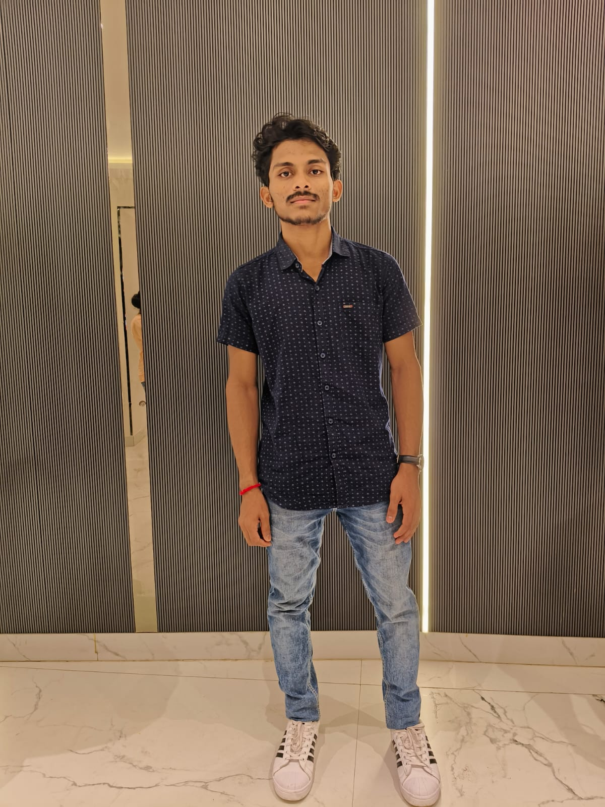

|  |
Anjan Kumar DasHere are the links: LinkedIn | Github | BlogSite | TwitterIncoming Master Degree Student at United School of Business Management I am a graduate of MPC Autonomous College, Baripada, with a keen interest in cricket. Coding is my profession, and while I enjoy it, my true passion lies in the game of cricket. Occasionally, I find coding exciting, blending my professional skills with personal interests. |